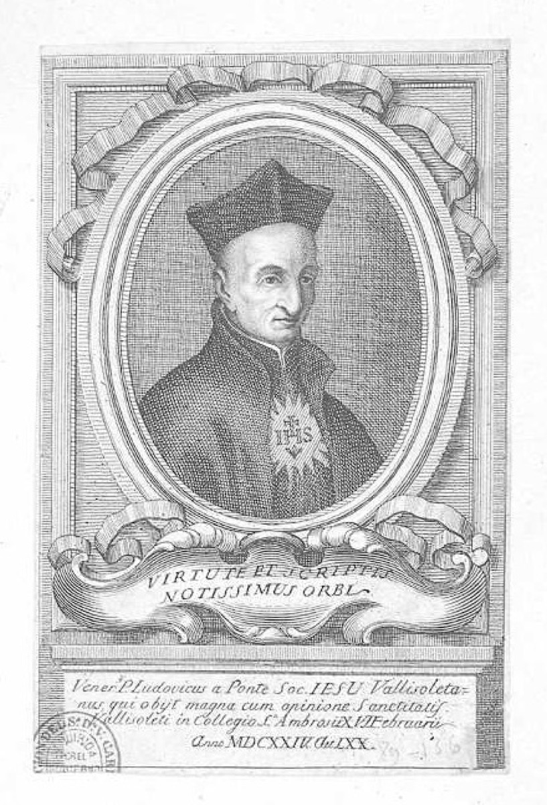

Časni sluge Božji
Svećenik
Časni sluga Božji Ljudevit de la Puente
1554. – 1624.
Isusovac iz Valladolida, učenik Baltazara Álvareza i Francisca Suáreza, bio je profesor, odgojitelj novaka i traženi duhovni voditelj. Njegove Meditacije o otajstvima vjere stoljećima su hranile molitvu katolika diljem svijeta.
Tekst je sažet i prilagođen uz pomoć umjetne inteligencije.

Izvor slike
- Spomendan
- 16. veljače
- Zaštitništvo
- Nije navedeno u izvoru
- Životni vijek
- 1554. – 1624.
- Djelovanje
- Obrazovanje i poučavanje vjere · Pisanje, znanost i umjetnost · Duhovno vodstvo i razlučivanje · Bolesnici i umirući
- Razdoblje
- 16., 17. stoljeće
- Crkveni naslov
- Časni sluga Božji
- Rođenje
- 11. studenoga 1554., Valladolid, Španjolska
- Država rođenja
- Španjolska
- Datum smrti
- 16.02.1624.
- Mjesto smrti/mučeništva
- Valladolid, Španjolska
- Uloga
- Svećenik
- Mučenik
- Ne
- Ostale oznake
- Časni sluga Božji – nema liturgijskog spomendana; u direktoriju naveden na dan smrti.
- Pripadnost
- Isusovac
- Drugi oblici imena
- Luis de la Puente · Luis
- Priznanje herojskih kreposti
- 16. srpnja 1759., Klement XIII.
U kalendaru zbirke naveden je dan smrti.
Životopis
Ljudevit de la Puente rođen je 11. studenoga 1554. u Valladolidu. Otac Alonso bio je službenik ondašnjega kraljevskog suda, a majka se zvala María Vázquez. Na sveučilištu u rodnom gradu stekao je 1572. bakalaureat iz umjetnosti i filozofije te započeo teologiju, ali je studij prekinuo kad se odlučio za redovnički život. U Družbu Isusovu stupio je 2. prosinca 1574.
Novicijat je proveo u Medini del Campo pod vodstvom Baltazara Álvareza, koji mu je ostao trajni duhovni uzor. U isusovačkom kolegiju sv. Ambrozija u Valladolidu učitelj i duhovni voditelj bio mu je Francisco Suárez. Nakon daljnjega studija u Oñatiju i treće probacije u Villagarcíji de Campos zaređen je 1580. za svećenika, a potom je u Salamanci predavao filozofiju.
Slijedile su godine odgovornih službi. Od 1585. do 1589. bio je učitelj novaka i vicerektor u Villagarcíji de Campos, a kasnije profesor teologije i rektor kolegija sv. Ambrozija. Po nalogu generala Claudija Acquavive obilazio je kao vizitator kolegije svoje provincije. Kad je 1599. kuga pogodila Villagarcíju, brinuo se za oboljele. Slabo zdravlje postupno ga je udaljilo od upravljanja i poučavanja, pa je oko 1608. napustio te službe.
Posljednja desetljeća posvetio je pisanju i duhovnom vodstvu. Do smrti je bio duhovni voditelj Marine de Escobar, kasnije utemeljiteljice španjolske grane brigitinki. Njegove Meditacije o otajstvima naše svete vjere, objavljene 1605. i 1607., postale su jedno od najčitanijih djela katoličke duhovne literature. Pisao je i o kršćanskom savršenstvu u svim životnim staležima, o sakramentima te životopis svojega učitelja Álvareza. Umro je u Valladolidu 16. veljače 1624.
Život i nasljeđe
Glas o svetosti pratio je de la Puentea i nakon smrti. Postupak za njegovo proglašenje blaženim službeno je otvoren 4. listopada 1667., čime je dobio naslov sluge Božjega. Njegovi su spisi u postupku odobreni 1714., a papa Klement XIII. priznao mu je herojske kreposti 16. srpnja 1759. Otada nosi naslov časnoga sluge Božjega. Daljnji tijek postupka zaustavljen je nakon ukinuća Družbe Isusove 1773.
Njegovo je nasljeđe ponajprije u knjigama. Meditacije su prevedene na desetak jezika, među njima i na arapski i kineski, a Duhovni vodič doživio je samo u francuskom prijevodu dvanaest izdanja. U djelu O savršenstvu kršćanina u svim staležima pokazivao je da je put prema svetosti otvoren i laicima usred njihovih svakodnevnih obveza. Bakrorez iz 18. stoljeća, koji se čuva u Španjolskoj nacionalnoj knjižnici, bilježi da je umro u kolegiju sv. Ambrozija u Valladolidu, okružen glasom svetosti.
Tekst je sažet i prilagođen uz pomoć umjetne inteligencije.
Pročitaj više na izvornoj stranici ↗